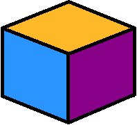

Saya memiliki berbagai hobi selain menggambar, saya suka membaca buku. Genre yang paling saya sukai adalah fantasy, romance, dark thriller, dan kriminal. Saya juga suka menonton animasi Jepang (anime) dan Drama Korea :p
Saya menyukai seni terutama lukisan, walaupun saya tidak terlalu mahir dalam melukis, namun seni gambar dan lukisan adalah hobi saya sejak kecil. Sampai sekarang saya suka menggambar bebas dengan media apa saja.

Karya seseorang dapat menggambarkan sifat dan pandangan seseorang terhadap seni, karya juga dapat menggambarkan kebebasan. Dibawah ini adalah karya saya. Karya ini saya buat untuk memenuhi tugas mata pelajaran KKPI di SMAKBO
